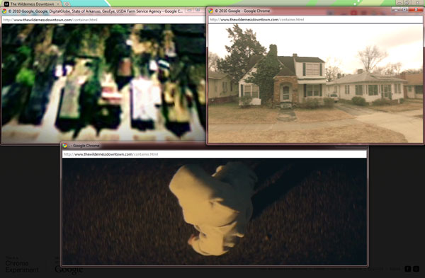
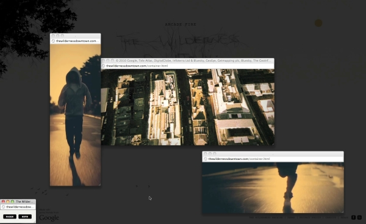

-
The Flashing Lights Settled Deep In My Brain: “The Wilderness Downtown” and the Limits of Digital Imagination
by Sam Biederman September 14, 2010
It needs only your childhood address, and then it takes control. You’re spirited across states and through time with a flock of darting blackbirds. You circle above your childhood home—and then you’re on the ground, running down the street, trees and houses and streetlamps flickering at the edge of your vision. Meanwhile, the song sings your life. Is it a time machine? Magic? No—or yes, both: it’s The Wilderness Downtown, an interactive film/Arcade Fire promotion created by Chris Milk and set to the song “We Used To Wait,” off the band’s excellent new album The Suburbs.
If you’re reading this, you’re online, which means there’s a good chance you’ve had a look at it. The Wilderness Downtown is something just beyond a video—it uses the medium, but it also takes over your computer screen, opening and closing windows in different parts of your desktop. Based on the address you provide at the beginning, the presentation uses Google Maps to find satellite and, when available, street-level images of your childhood home. It pairs these images with video of a person in a hooded sweatshirt running through a non-descript street at night—your mind quickly populates the empty backdrop with your hometown, the figure’s shadowed face with your own—while playing Arcade Fire’s pulsing, urgent music.
The Wilderness Downtown is already a sensation on the Internet. There’s never before quite been anything like it. It’s geo-targeted but it’s also universal, it’s a music video but it’s also interactive, it’s interactive but it’s not a game. It’s something entirely new, a mixed medium we’ve never quite seen before.It’s also disturbingly invasive. Not only because at the outset it blithely asks for your childhood address, or flashes surveillance footage of your mother’s house, or busily takes over your computer screen (although all these features are creepy)—it’s because it occupies your memory and then serves it back up to you. The presentation capitalizes on the fact that a computer remembers better than a person, with more detail and more accuracy. Google Maps then provides the truer memory of the appearance of your childhood street, Arcade Fire provides the emotion, and the program itself directs the eye. All you need to do is experience the thing and, when prompted, type a postcard to yourself as an adolescent. The Wilderness Downtown doesn’t allow the viewer to draw connections of his or her own; it takes you by your collar and tells you where and what and when to remember, and then it tells you what to do about it.
This is not a music video; I don’t know if it’s art. There’s no metaphor here—the connections are literal. In that way, The Wilderness Downtown has less to do with, say, that Paula Abdul video where she dances with cartoon cats than it does with a medieval morality play.
Morality plays like Everyman don’t really have characters; instead they have stand-ins. The only human in Everyman is Everyman himself, who acts out the universal experience of life and death. At the play’s end Jesus, another non-character, appears and speaks directly to the audience, commending them to repent, making the play even more plainly applicable to life. In The Wilderness Downtown, the hooded figure plays the same role as Everyman—it’s an un-character, a mirror held up to the viewer.
In the way they directly appeal to their viewers, Everyman and The Wilderness Downtown are vital, personal, relevant. But they miss something big: they miss the humanizing potential of the fourth wall. This separation between audience and actor was an innovation of the morality plays’ successor, the Renaissance theater of Marlowe and Shakespeare. The fourth wall contains the world of the play, allowing for the creation of fully “human” characters who aren’t immediately relatable. But by containing the action, by cultivating “true” characters, the fourth wall forces audiences to step out of their consciousness in order to relate to unfamiliar people and situations. In this way, the theater of metaphor stretches its viewers to expand their consciousness. It’s one of the ways that Shakespeare and his cohort invented the modern individual (apologies to Harold Bloom). And it’s a humanity that The Wilderness Downtown misses.
Troublingly, this latest digital experiment somehow feels like the prototype of a new kind of art. Geo-targeting is just one example of countless new digital technologies that enable artists and advertisers to “personalize” pieces for their viewers, in the same style as The Arcade Fire’s interactive experience.
It’s not all art—advertisers use it too: Every time I open my Gmail, new ads appeal to themes Google’s algorithim-spinning robots have identified in my emails: “Gay Men in New York!” “Free Internet Marketing Tools,” “Men’s Suits & Separates.” Sadly, they all fit. And then there’s stuff like “Barging in France.” I can’t quite figure out how I got that one (although I like to imagine myself as the intercontinental business sailor to whom it appeals). Misses like this are glimpses into the remaining weaknesses of the internet’s ever-improving machinery of personalization. Although the machinery isn’t yet perfected, it soon will be. And as Google and its competitors get better at targeting what we see, advertising, culture, and even art threaten to move away from expansive metaphor and towards solipsistic reflection.
For this reason, it’s appropriate that this online experience is set to “We Used To Wait,” a song that explores how love, longing, and waiting are altered in the age of digital communication. The song seems to anticipate the potential impact of its interactive marketing material—and oddly, it seems to regret the change. Lead vocalist Win Butler sings, “I used to sleep at night/ Before the flashing lights settled deep in my brain.” This lyric describes a medium that insinuates itself in your mind, a digitized world whose flashing lights outshine sleep, block out dreams, and limit imagination.
All this said, I’d urge anyone who hasn’t encountered “The Wilderness Downtown” to do it right away. Everyone should experience it once—but maybe just once. It’s uncanny to have a machine do your imagining for you, but in the end it’s not real imagining. It’s deceptively simple, really no more than a high-tech mirror. And you can only gaze into your own eyes for so long before you stop seeing anything.